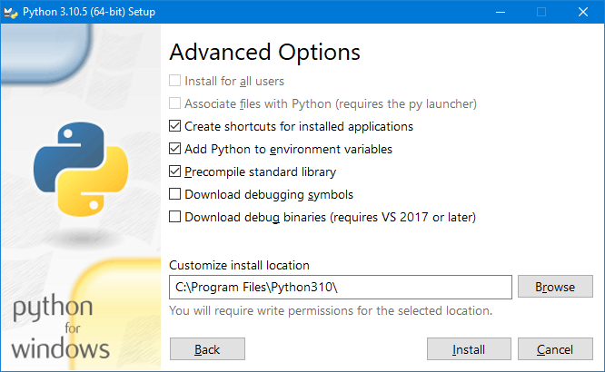
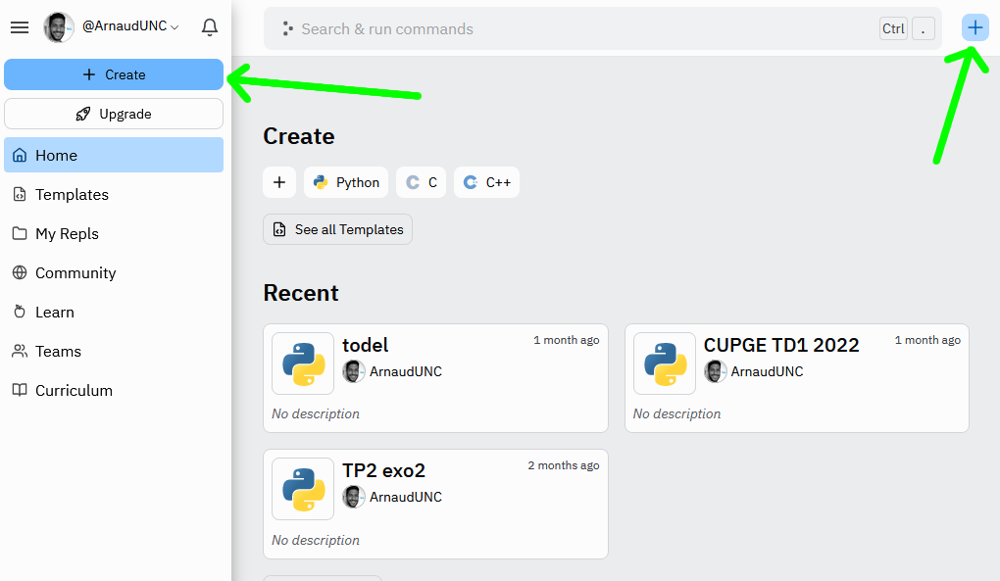
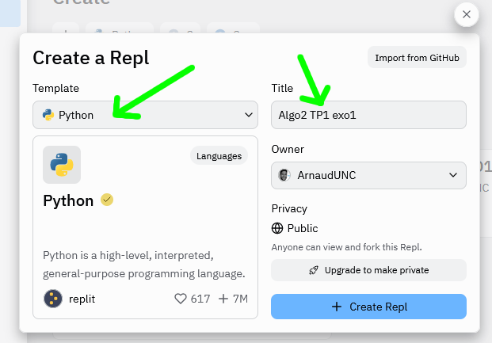
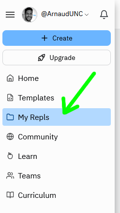
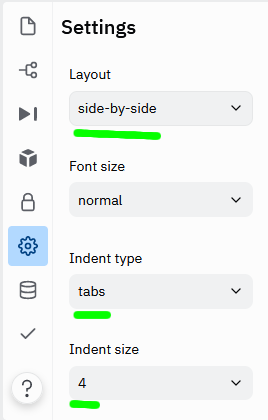
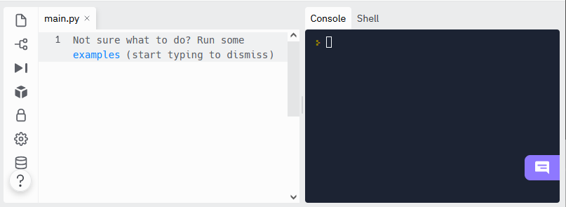
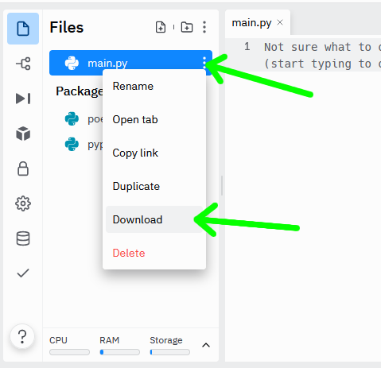

Façons d'exécuter un programme Python
Python est supporté sur plusieurs plateformes (Windows, Mac, Linux, et d'autres systèmes), sous de nombreuses formes, et de nombreux outils pour coder existent, il n'est donc pas toujours facile de s'y retrouver. Voyons les façons les plus courantes d'installer et de programmer dans ce langage.
Sur votre propre ordinateur
La façon classique de programmer en Python est en l'installant sur votre ordinateur. Et le plus courant est d'installer CPython.
Python n'est pas forcément installé sur tous les PC de l'UNC, cette approche est donc conseillée uniquement pour ceux qui viennent avec leur ordinateur portable ou bien pour ceux qui veulent installer Python sur leur ordinateur de maison.
Windows
Il faut télécharger l'installeur officiel. Pour chaque version de Python il y a plusieurs sous-versions que vous pouvez télécharger par exemple 32 ou 64 bit, ARM, ou encore "embeddable package". Ce qu'il vous faut est la version "Windows installer (64 bit)", et c'est la version par défaut que la page d'accueil du site propose. Puis vous suivez les étapes de l'installation mais choisissez une installation personnalisée afin d'être sûr d'avoir au minimum les options suivantes:

Pour le dossier d'installation ↓ laissez celui par défaut, mais surtout cochez l'option pour ajouter Python aux variables d'environnement, ça permettra à
la commande python d'être reconnue dans la console de Windows. Si cette option n'a pas été cochée lors de l'installation vous pouvez
toujours gérer les variables d'environnement manuellement, mais ça demandera de savoir le faire.
Il est aussi utile ↓ de cocher l'option pour créer les raccourcis dans le menu démarrer de Windows.
Une fois l'installation terminée vérifiez qu'elle a été faite correctement en ouvrant une Invite de commandes ou un Terminal (depuis le
menu démarrer), et si vous lancez la commande python vous devriez avoir quelque chose comme ceci:
MacOS
Sur MacOS Python 2.7 est installé par défaut, mais comme on l'a vu précédemment cette version est obsolète, il faut donc installer vous-même une version plus récente. Par l'installeur officiel. Vous pouvez aussi installer Python par un outil plus flexible comme pyenv ou par un gestionnaire de paquets comme sur Linux, tel que homebrew.
La documentation de Python donne des informations supplémentaires pour les utilisateurs de MacOS.
Linux
Pour Linux on peut passer par le gestionnaire de paquets officiel de la distribution, tel que apt-get pour les distributions basées sur
Debian, comme Ubuntu, ou pacman sur Arch Linux etc... Ou bien vous pouvez installer Python par un outil plus flexible comme pyenv.
Editeurs de code
Je recommande au niveau débutant d'utiliser des éditeurs de code simples associés à la console pour lancer vos programmes. Cela permet de maîtriser les bases, et de ne pas être encombré, alourdi de fonctionnalités, de menus, de boutons et d'affichages dans tous les sens, qui certes facilitent la vie d'un développeur Python confirmé, mais qui auront plus de risque de perdre et ralentir un développeur novice. Les éditeurs simples sont également bien plus faciles, rapides et légers pour installer et exécuter.
Sur Windows vous avez Notepad++ qui a un look ancien mais qui est toujours activement développé, ou Sublime Text qui est plus moderne dans son design. Sur Linux vous avez aussi Sublime Text
Vous pouvez éditer votre code à l'aide d'un éditeur de texte simple ( , ...) ou avancé (Microsoft Visual Studio Code, PyCharm...), mais SURTOUT PAS un éditeur de texte riche tel que Microsoft Word, qui sont destinés à éditer visuellement des documents, et pas du code. Tous les outils sont majoritairement gratuits, certains peuvent être payants, ou avoir des fonctionnalités payantes.
Sur horizon
Comme pour le premier semestre, vous pouvez exécuter Python depuis un serveur à l'UNC. Dans ce cas vous n'avez pas à installer Python sur votre propre machine, car il sera exécuté sur une autre machine, située dans les locaux de l'UNC. Vous y accédez de deux façons différentes:
Par un logiciel qu'on appelle Client Horizon, que vous pouvez télécharger et installer, puis en se connectant sur
https://horizon.unc.nc(il est important de mettre le https://).Par une interface web, c'est à dire à travers un navigateur web tel que Chrome, Edge, Safari ou Firefox, puis en allant à l'adresse
https://horizon.unc.nc(il est important de mettre le https://). L'interface web ressemble beaucoup à la version client, mais est plus lente et potentiellement moins stable.
Sur Replit
Vous pouvez aussi développer en Python grâce au service en ligne replit.com. Dans cette configuration, replit nous sert à tout: éditeur de code, gestion de projet, et exécution du code.
Pour coder avec replit:
1) Aller sur replit.com et créer un compte (gratuit)
2) ↓ Une fois identifié avec votre compte, créer ce qu'ils appellent un repl, c'est-à-dire un projet de code, en utilisant les boutons suivants:
3) ↓ Choisir le langage que vous voulez utiliser donc Python, et donner un nom descriptif qui vous permettra de facilement retrouver votre projet plus tard:
4) ↓ Vous retrouverez votre repl (votre projet) parmi la liste de tous vos repl, accessible ici. Vous pourrez les organiser en dossiers, les renommer et les supprimer:
5) ↓ Une fois votre repl ouvert, vous verrez trois zones: .
à gauche la liste de vos fichiers (vous pouvez ignorer la partie "Packager files" pour ce cours).
main.pyest le fichier par défaut, il est obligatoire, et est le point d'entrée de votre programme, c'est à dire le fichier qui sera exécuté à chaque fois que vous voudrez lancer votre programme.Au centre se trouve l'éditeur de code avec des onglets qui correspondent à vos fichiers ouverts.
À droite deux invites de commandes: l'une est nommée console et sert à la fois d'interpréteur de commandes Python et d'affichage pour votre programme. L'autre invite de commandes est nommée shell et est l'invite de commandes du système d'exploitation sous-jacent (Linux).
En haut se trouve le bouton Run qui va exécuter votre programme, il va lancer le fichier main.py.
6) ↓ Vous pouvez ajouter des fichiers avec ce bouton. Nommez votre fichier, et si vous créez un fichier Python, n'oubliez pas d'ajouter l'extension
.py, ce n'est pas automatique.
7) ↓ Dans les options vous pouvez changer l'agencement visuel des différentes zones (side-by-side c'est-à-dire côte-à-côte ou stacked empilées). Vous pouvez aussi choisir si vous voulez des caractères espaces ou tabulations pour l'indentation de votre code (Python recommande des espaces, personnellement je préfère les tabulations). Et enfin vous pouvez changer la taille visuelle des indentations (nombre de caractères espace ou taille des tabulations), mais 4 est une bonne valeur par défaut.
8) ↓ Si vous cliquez encore sur l'icône de la zone de gauche qui est ouverte (par exemple l'icône de fichier si vous voyez la liste de vos fichiers), la zone de gauche va se réduire, utile quand vous manquez d'espace à l'écran.
9) ↓ Chaque fichier a un menu qui permet de faire certaines actions sur lui, comme par exemple le télécharger, le renommer, le supprimer. Ce menu est accessible en cliquant sur les 3 points verticaux près du nom du fichier.
10) ↓ Un autre menu général pour la gestion des fichiers est accessible avec les 3 points verticaux ici. Vous pouvez uploader des fichiers locaux vers
votre repl, ou télécharger tous vos fichiers du repl en une seule fois dans un fichier compressé .zip.
Fonctionnement schématique de replit

Cette approche a les avantages suivants:
- Extrême facilité d'utilisation: nous n'avons rien à télécharger, installer ou configurer, ce qui est vraiment très pratique.
- Très grande disponibilité: comme tout se passe en ligne, seule une connexion internet est nécessaire. On peut ainsi développer de n'importe quel appareil: pc, tablettes, et même smartphones.
- Très facile de partager son code avec d'autres personnes
Cette approche a les désavantages suivants:
- Dépendance sur un service tiers et une connexion internet: si replit ou le réseau sont indisponibles pour une raison quelconque, plus rien n'est possible. De plus replit a des fonctionnalités payantes, et pourrait le devenir entièrement.
- Aucune configuration possible: on ne peut utiliser l'éditeur de code qu'on veut, ou la version exacte de Python qu'on veut, aucun contrôle sur les bibliothèques de code disponibles.
- Performances réduites: Python s'éxecute sur les serveurs de replit, qui sont probablement moins puissants qu'une machine ordinaire, pour des raisons de coût. De plus il y a un délai entre le moment où appuie sur le bouton pour exécuter, et le moment où on voit les résultats à l'écran, à cause du délai normal du réseau.
- Certaines fonctionnalités de Python sont indisponibles: développement d'interfaces utilisateur, utilisation de matériel spécifique comme accès à la carte graphique pour des calculs haute performance, intégration dans un projet plus grand, etc...
Replit est destiné avant tout à l'apprentissage, et n'est définitivement pas la façon classique de développer!